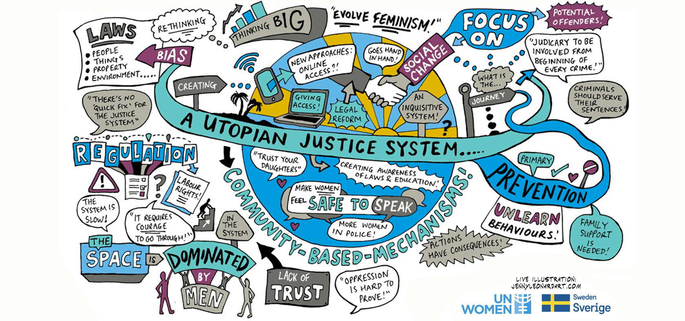
A Utopian justice system designed by women journalists from Asia and the Pacific
What would a utopian justice system look like? This was the...
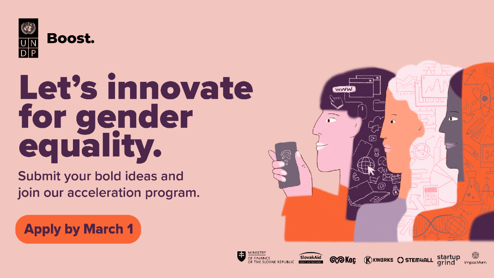
BOOST impact acceleration programme launches call to advance gender equality in Europe & Central Asia
Istanbul, Turkey – Powered by UNDP Europe and Central Asia,...
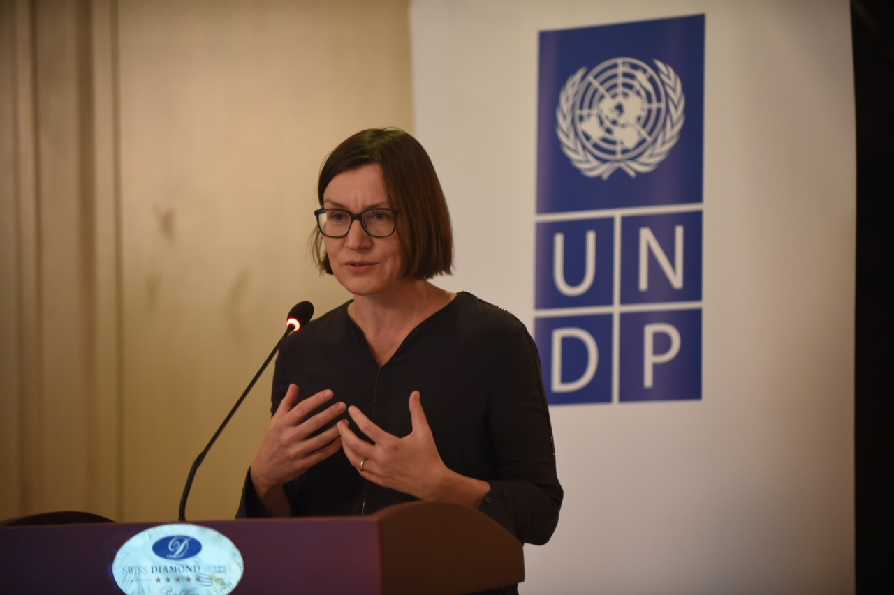
Women, green recovery and digital inclusion top the agenda of regional Director’s visit to Western Balkans
Ms.Mirjana Špoljarić Egger, UNDP’s Assistant Administrator and Director...
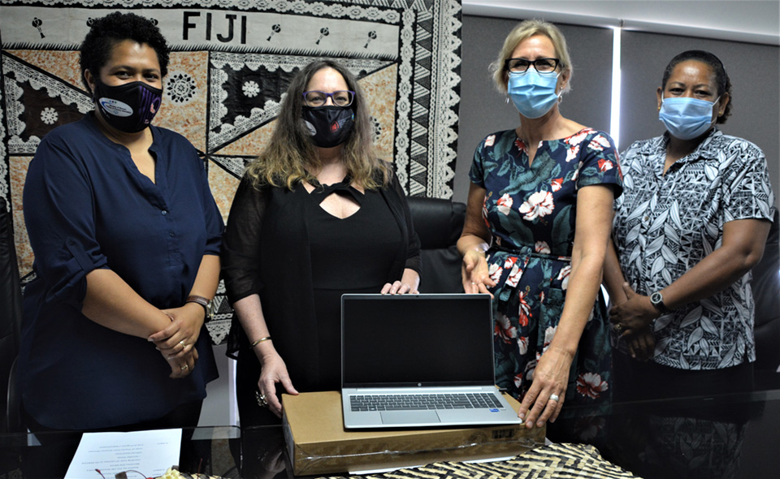
Press Release: Ministry Welcomes ICT Boost to Progress Gender Equality in Fiji
Suva,Fiji–The Ministry of Women, Children and Poverty Alleviation...
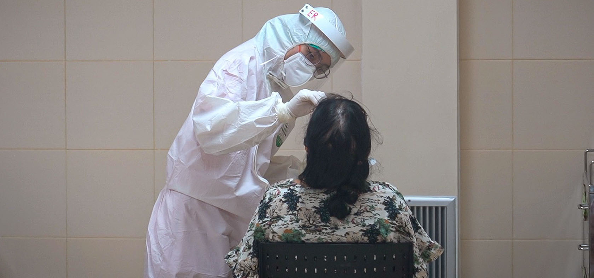
Expert’s Take: The gender challenges in Asia and the Pacific that will dominate in 2022
The coming year may not see the end of the pandemic,...
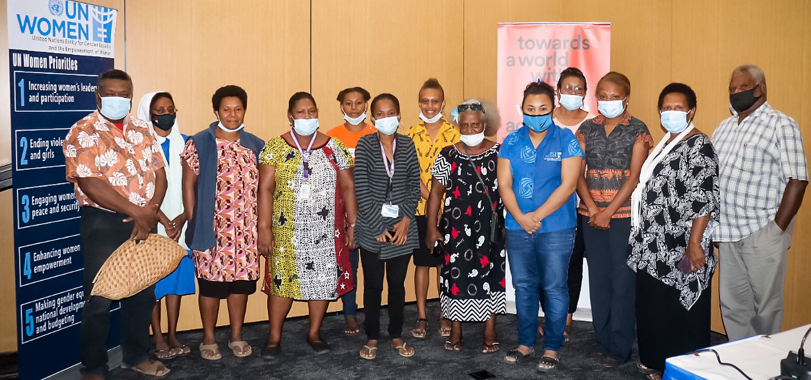
Forum discusses financial plight of Papua New Guinea’s civil society organisations
The tenuous financial situation of civil society organisations (CSOs)...
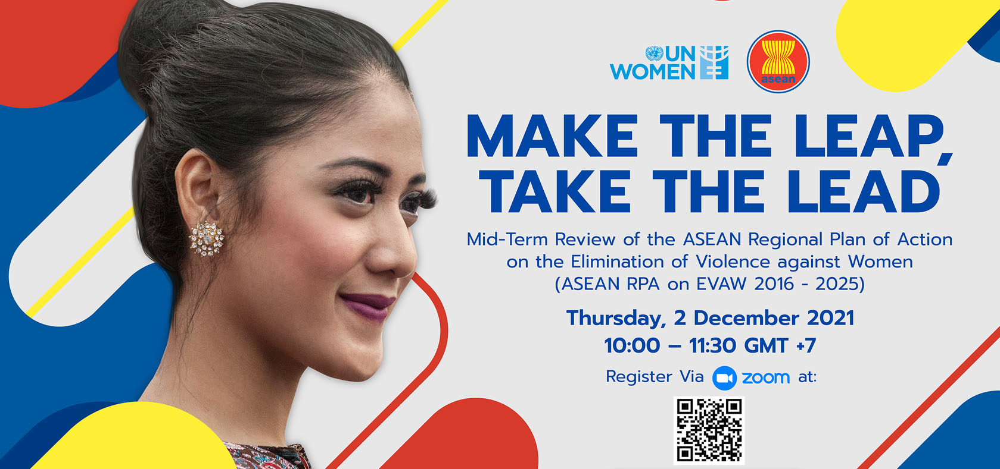
ASEAN agrees to speed up efforts to stem violence against women
Bangkok,Thailand—The Association of Southeast Asian Nations (ASEAN)...
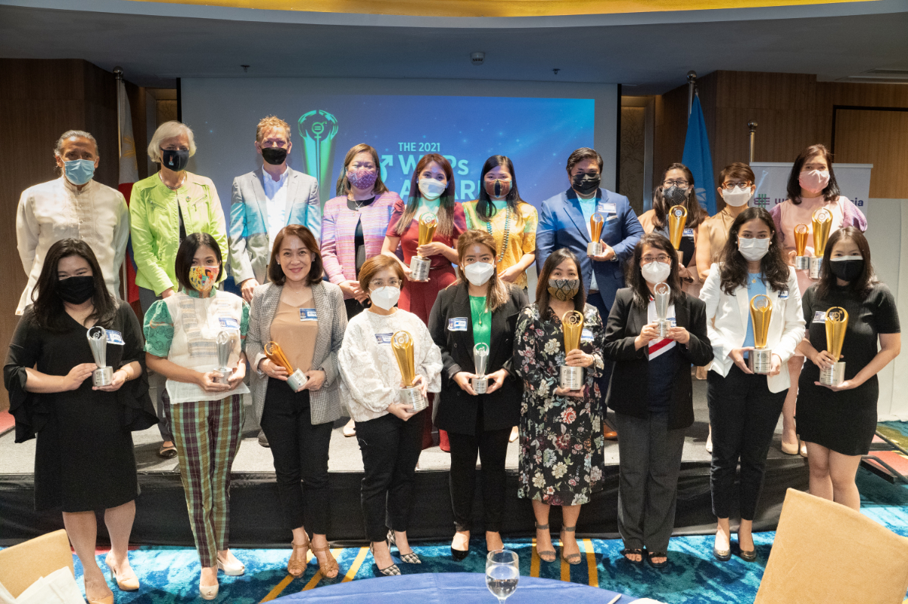
UN Women WeEmpowerAsia Philippines launches Women’s Empowerment Principles Winners Circle
MANILA, Philippines — On December 3, 2021, winners of the...
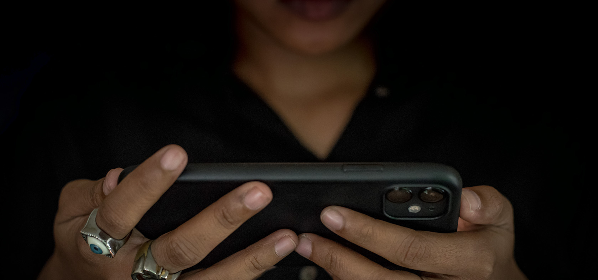
UN Women and partners help promote women’s online security through webinar series
Bangkok,Thailand—UN Women and the cybersecurity companies Insaan...
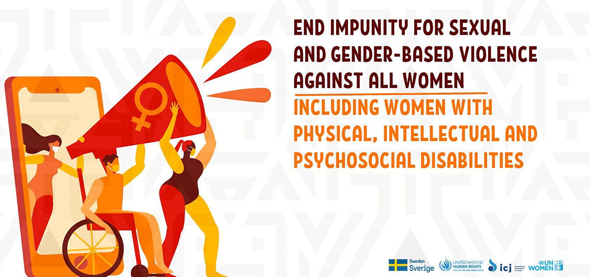
Access to Justice for women with disabilities
The status quo is disheartening for women with disabilities seeking justice...
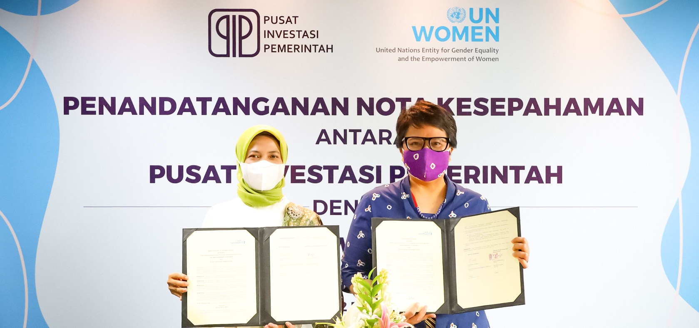
Indonesia’s Government Investment Center and UN Women Launch Partnership to Empower Women Ultra-Micro Businesses
Jakarta, Indonesia — UN Women and The Public Service Agency (BLU) of...
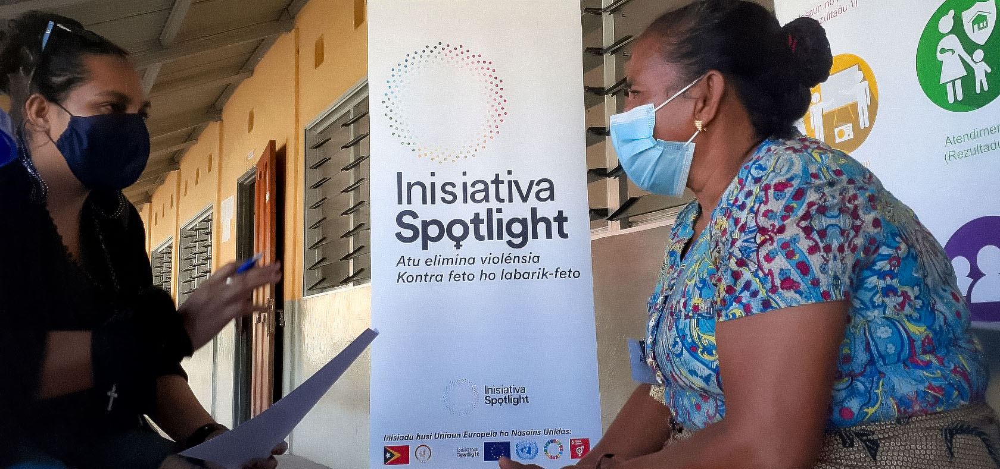
UN Women programme helps ease violence at schools and homes in Timor-Leste
Bobonaro, Timor-Leste — Thanks to a UN Women programme, hundreds...